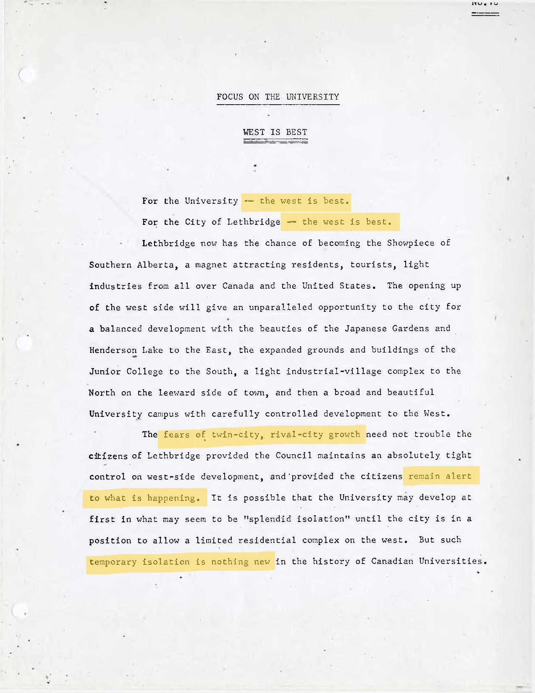
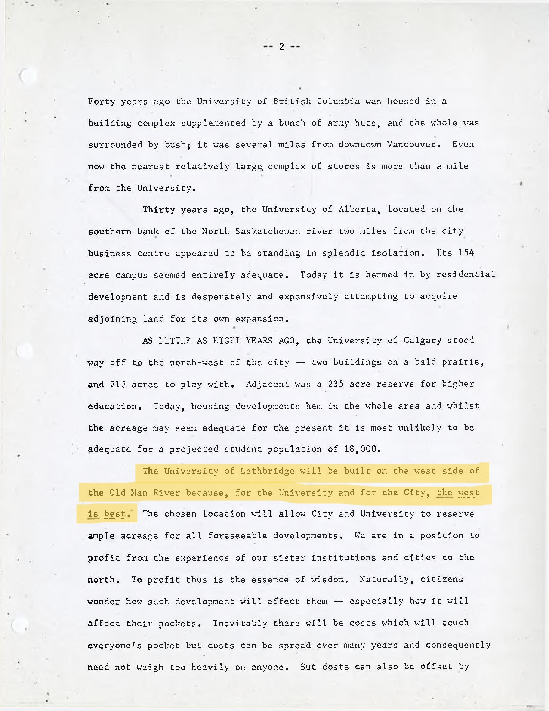
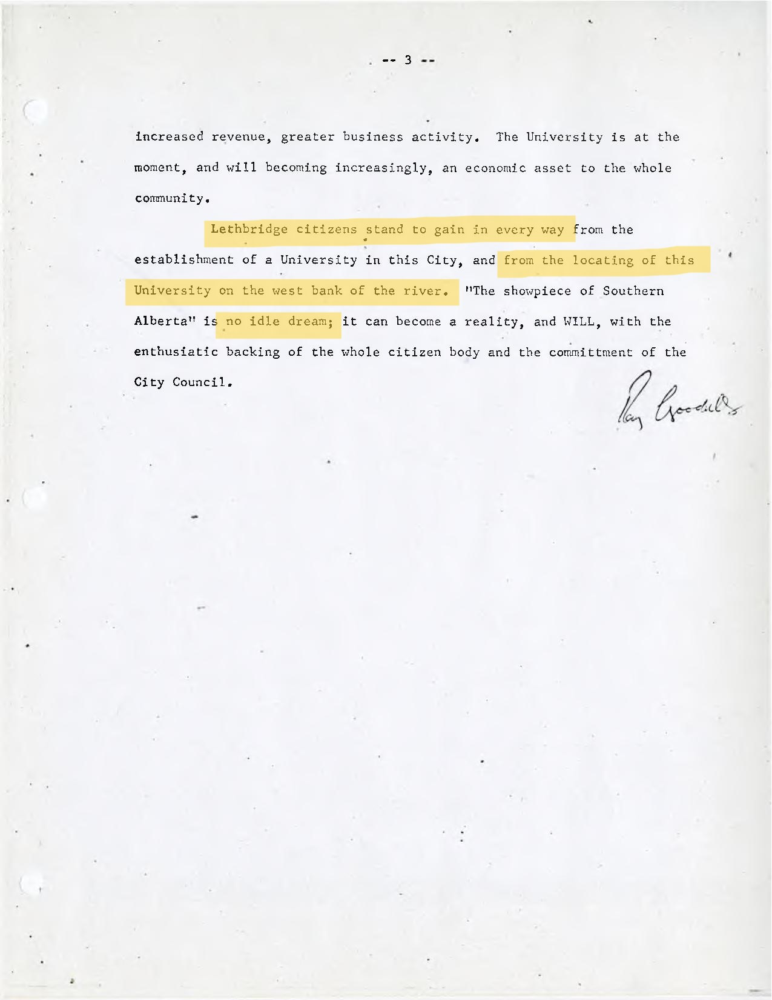

West

"...Geoff Massey wrote to the university president, W.A.S. (Sam) Smith...to report that the west Lethbridge coulee, in Erickson and Massey's opinion, was superior in almost every aspect to the existing college location. Geoff's argument stressed the importance of "seizing upon a site which is a challenge to the imagination of all concerned" (Stouck, 2013, p. 235).

"Erickson enjoyed an air tour of the Lethbridge area.... [T]he story goes that while the airplane was crossing the valley from east to west, Erickson was asked for his opinion on a proper site for the University of Lethbridge. Nonchalantly he offered "there," pointing vaguely downward, so that a reporter, who by a remarkable coincidence just happened to be sitting beside Erickson, was able to flaunt a headline next day proclaiming that the noted architect had plumped for a campus in the coulees. Thus the extraordinary publicity emanating from Erickson's visit fanned new life into the dying embers of an old dispute" (Holmes, 1972, p. 232).
"[The incident with Erickson on the plane] ignited a dispute already simmering between merchants who wanted the university downtown and a much smaller group who wanted the campus on a "virgin site" on the coulee, removed from commerce and with unlimited room for expansion" (Stouck, 2013, p. 232).

"...Russ Leskiw received a phone call from an anonymous gentleman who opened with 'Is that Dr. Liskew, president of the university?' After Russ's positive assurance, the caller continued 'Well, I've got a boat I'll sell ye, and ye'll damn well need it fer going across the river!' and peremptorily hung up" (Holmes, 1972, p. 89).

“The Board is convinced that the location on the west bank of the river is the one that will best enable the University to achieve its long-range academic goals and to make its fullest contribution to the educational and cultural life of Lethbridge and the whole of Southern Alberta” (ibid, p. 118).